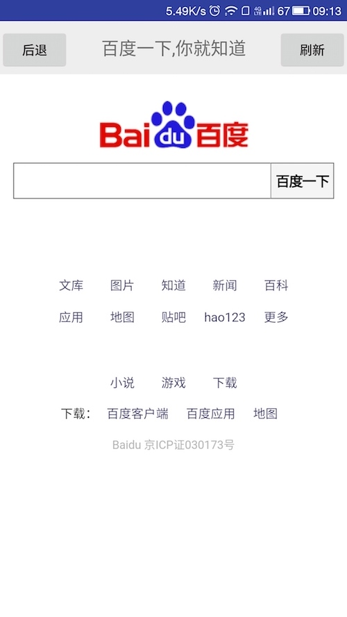
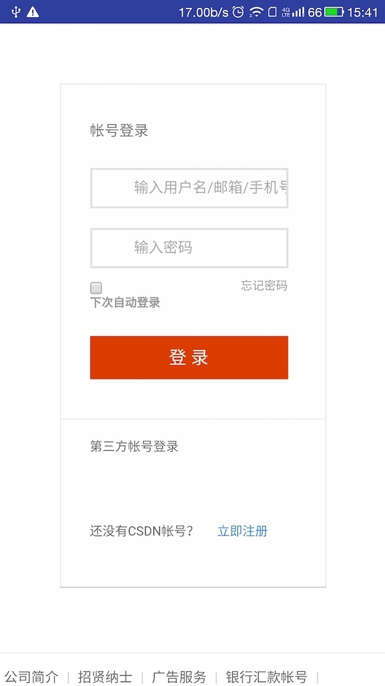

最近手头的项目界面要改成HTML5的，以前自己对于WebView仅仅只是一知半解，这次想好好总结下，我的博客不喜欢讲太多没用的东西，我追求实用主义，所以我的技术博客，永远只有两个主题：怎么用和怎么优化。典型的拿来主义。
怎么用？
- WebView 基本操作
- WebView 下载文件
- WebView 注入cookie信息
- Webview 中native与js交互
暂时只讲解一下这四个方面，以后再添加。
一. WebView 基本操作
mWebView.setWebViewClient() // 帮助WebView处理各种通知、请求事件的
mWebView.setWebChromeClient();// 主要处理解析，渲染网页等浏览器做的事情器
上面两个方法是你加载一个网页肯定会实现的两个方法。
mWebView.setWebChromeClient(new WebChromeClient(){
@Override
public void onReceivedTitle(WebView view, String title) {
super.onReceivedTitle(view, title);
txtTitle.setText(title);
}
});
mWebView.setWebViewClient(new WebViewClient(){
@Override
public boolean shouldOverrideUrlLoading(WebView view, String url) {
view.loadUrl(url);
return super.shouldOverrideUrlLoading(view, url);
}
});
例子：
加载百度主页，包含返回按钮，页面地址，刷新。如图：

二. WebView 下载文件
在WebView的网页里面我们可能要点击链接进行下载，这时候我们首先要新建一个DownloadListener，然后在onDownloadStart（）方法里面我们有两种方式进行下载：
1. 直接调用系统浏览器进行下载
2. 自己编写或使用其他网络框架进行下载文件
(1)调用系统浏览器
class MyDownload implements DownloadListener {
@Override
public void onDownloadStart(String url, String userAgent, String contentDisposition, String mimetype, long l) {
Uri uri=Uri.parse(url);
Intent intent=new Intent(Intent.ACTION_VIEW,uri);
startActivity(intent);
}
}
mWebView.setDownloadListener(new MyDownload());
(2)自定义下载
使用普通文件下载方式即可，此处不给出代码了。
三. WebView 注入cookie信息
关于Cookie我就不说了，以登陆csdn作为示例直接说用法：
1. App在html页面登录

mWebView.setWebViewClient(new WebViewClient() {
@Override
public void onPageFinished(WebView view, String url) {
super.onPageFinished(view, url);
CookieManager cookieManager = CookieManager.getInstance();
String cookie = cookieManager.getCookie(url);
}
});
通过上面方法可以获取到登陆成功跳转页面以后服务器返回的Cookie,这辆我们可以通过SharedPreferences将Cookie信息保存起来
2.当你再一次进入该页面时，将Cookie通过下面的方法返回给服务器：
private void syncCookie(Context context, String url, String oldcookie) {
CookieSyncManager.createInstance(context);
CookieManager cookieManager = CookieManager.getInstance();
String cookie = cookieManager.getCookie(url);
cookieManager.setAcceptCookie(true);
cookieManager.setCookie(url,oldcookie);
CookieSyncManager.getInstance().sync();
}
注意：syncCookie函数要在webview.load()之前调用
四. Webview 中native与js交互
通过java代码与js代码直接相互调用的方式实现Android native与H5信息的相互，这里简单的介绍一下使用方式
native代码调用H5的js代码
（1）在H5页面中添加一个js函数
<script type="text/javascript">
function uu_click(clicked_id) {
alert(clicked_id);
}
（2）在Native中通过java代码调用
若这时候H5页面已经被加载到webview中,则可以通过java代码直接调用js函数：
h5Fragment.mWebView.loadUrl("javascript:uu_click" + "('" + clickId + "')");
js代码调用java函数
（1）首先在java端编写能够被js代码调用的java函数
- native方法的实现
/**
* 自定义实现的native函数，可被js代码调用
*/
class JsInteration {
...
@JavascriptInterface
public void toastMessage(String message) {
Toast.makeText(getActivity(), message, Toast.LENGTH_LONG).show();
}
...
}
（2）在native中注入本地方法，供js调用；
mWebView.addJavascriptInterface(new JsInteration(), "control");
（3）在js代码中调用java代码：
function reply_click(clicked_id {
window.control.toastMessage(clicked_id)
}
关于WebView的四个基本用法就介绍到这里，再下一章会介绍WebView的优化。
欢迎留言讨论。
项目示例代码在：https://github.com/M78Snail/WebViewStudy